SIX GRAPHICS EXPERIMENTS
Water, demolition, cloth, flocking, fire and a whole town — six three.js motion pieces, each in one folder of plain static files. Three.js 0.170.0 and lil-gui come from a pinned CDN importmap: no build step, no npm, no server. Every page carries a control panel, a quality preset and interaction hints, and every one was checked in headless Chromium. ← the lab hub · the five games →

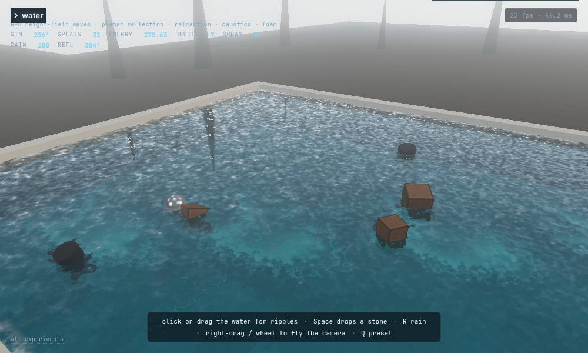
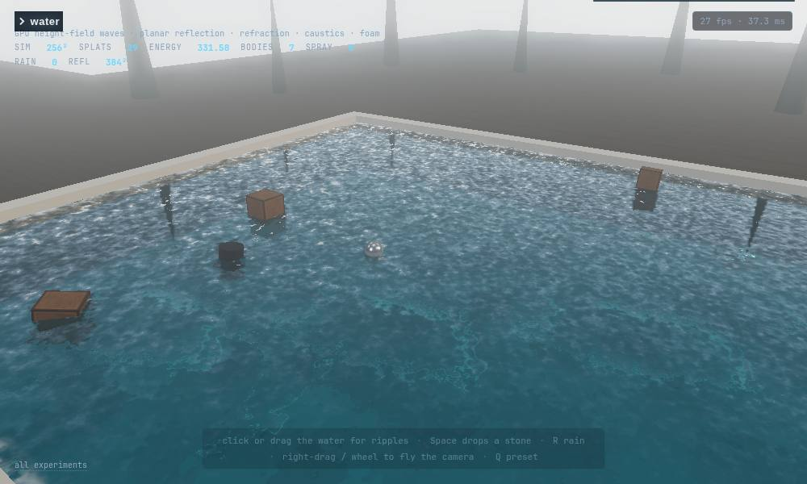
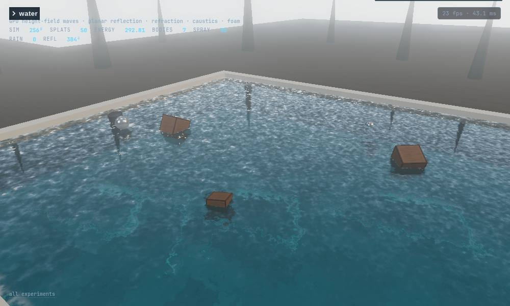
1 · Water
GPU height-field waves (ping-pong float textures, stable leapfrog update), planar mirror reflection, screen-space refraction, Fresnel, depth tint, foam field, caustics on the pool floor, and crates, balls and barrels that bob on the same waves and kick them back. Click and drag to shove water, drop stones, turn on rain.

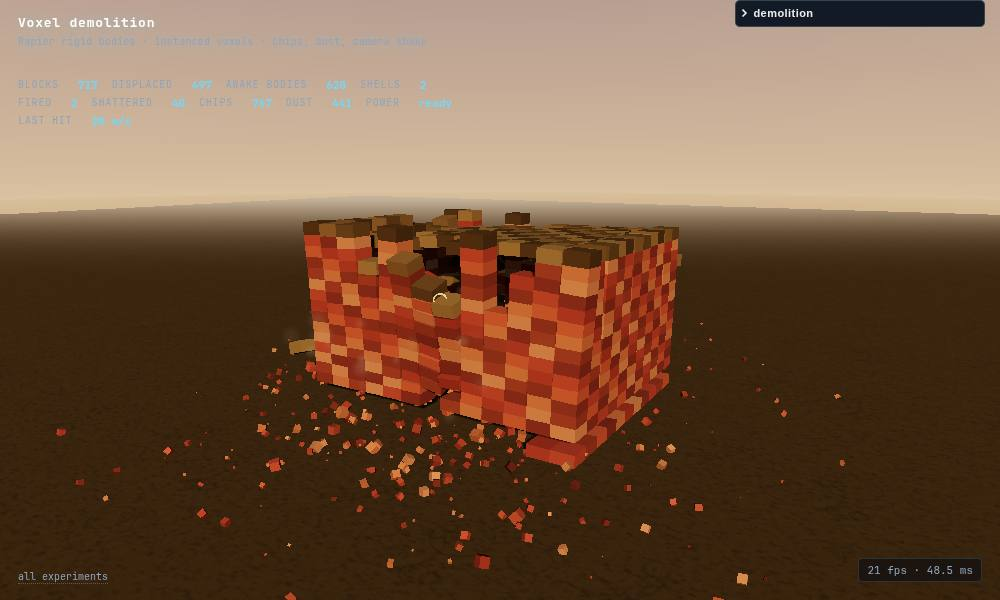
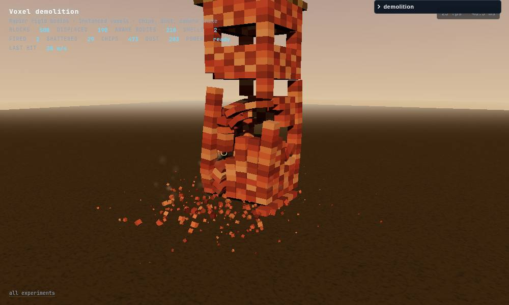

2 · Voxel demolition
842 rigid-body voxels in Rapier (WASM, CDN): one instanced mesh, CCD shells, impact events, a shatter threshold that retires blocks into chipped debris, dust puffs, a flash light and camera shake. Wall, house, tower and arch rebuild on a key; aim with the pointer, charge with the click.

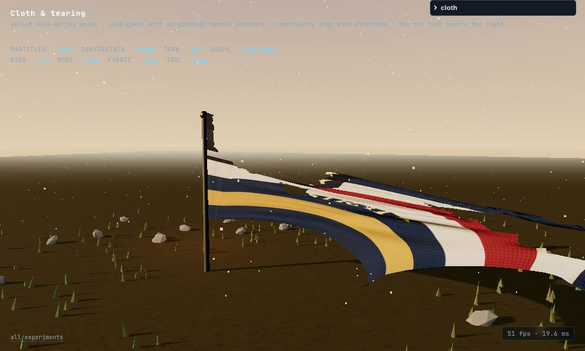
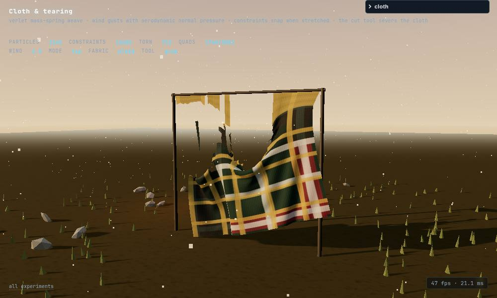

3 · Cloth & tearing
A Verlet mass–spring weave (structural, shear and bend constraints, Gauss–Seidel) with gusting wind and aerodynamic normal pressure, so the sheet snaps and flutters. Constraints snap when overload persists, so grabbing a patch of the sheet and pulling rags a hole in the body — six real-mouse yanks tore 48 to 352 constraints each on the default settings — and the shift-drag cut tool severs the weave. Quads with a broken edge stop being drawn: that is the ragged tear.

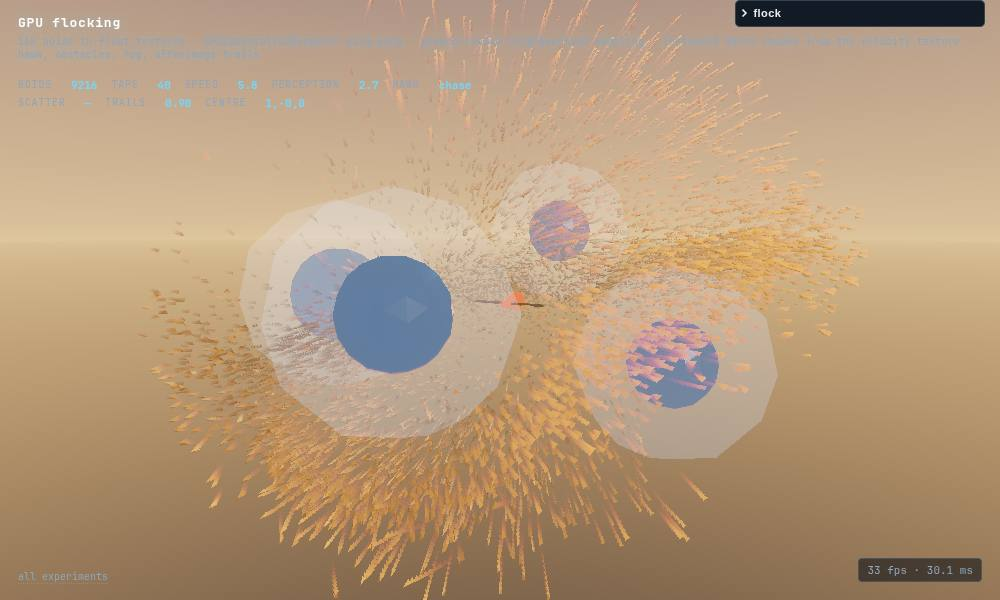
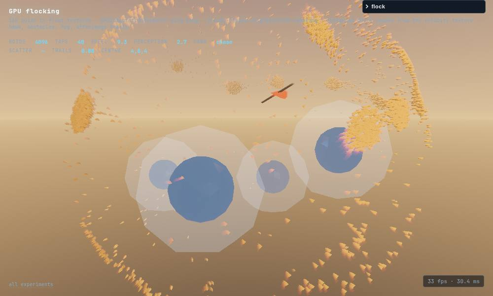
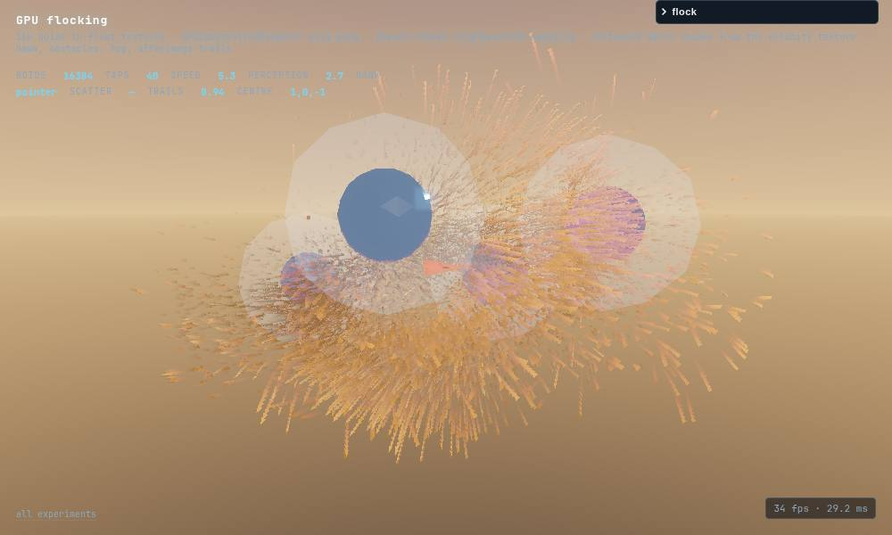
4 · GPU flocking
Up to 25 600 boids as position and velocity float textures run through GPUComputationRenderer; each boid samples a pseudo-random slice of the flock as its neighbourhood, so the cost is O(n·taps). One instanced draw call reads those textures in the vertex shader and stretches a dart along the velocity. Fog, afterimage trails, obstacle spheres and a hawk that rides the pointer.

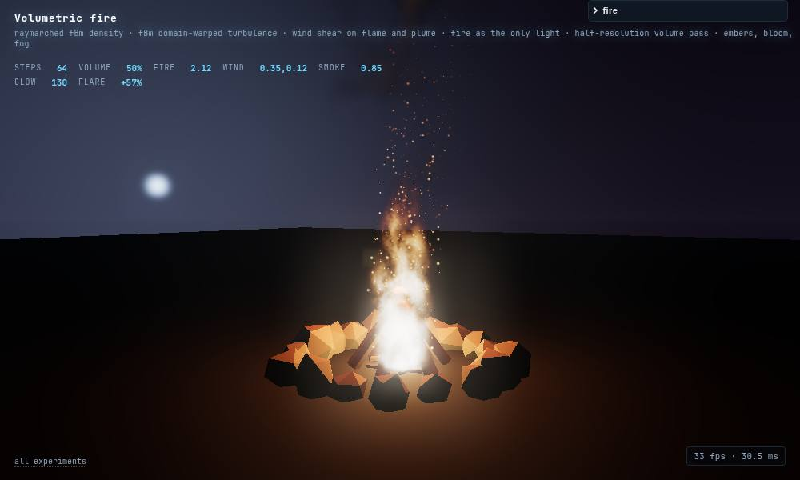
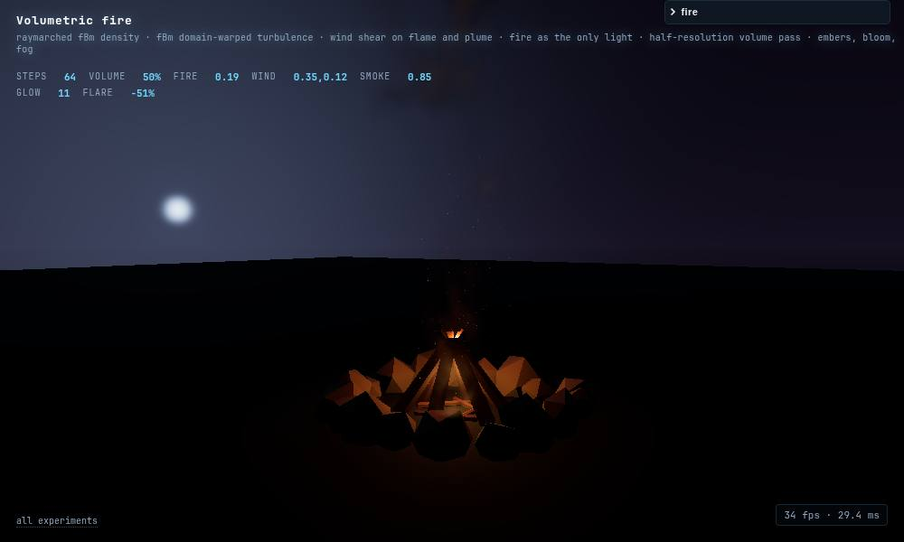
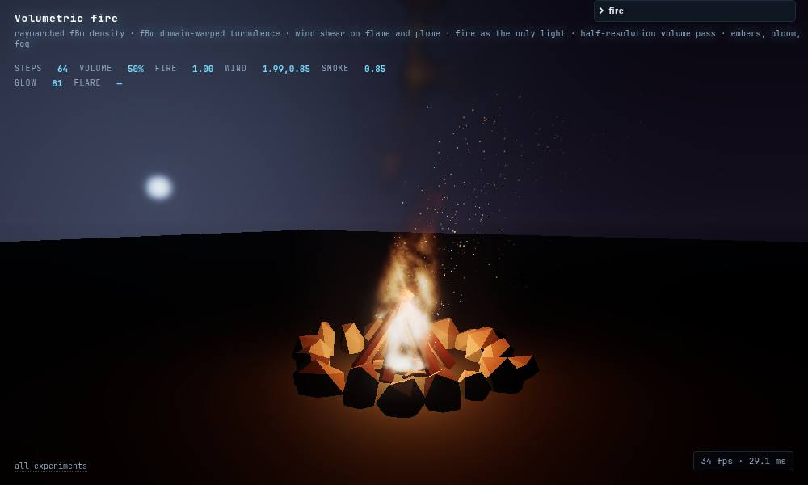
5 · Volumetric fire
A raymarched density field: a fBm-carved teardrop flame with a temperature ramp (white core, orange licks, dark red edges), a spreading smoke plume lit only by the fire itself, wind shear on both. The march runs at reduced resolution in a custom composer pass and composites over the scene, so it is cheap; embers, a flickering point light and bloom do the rest.
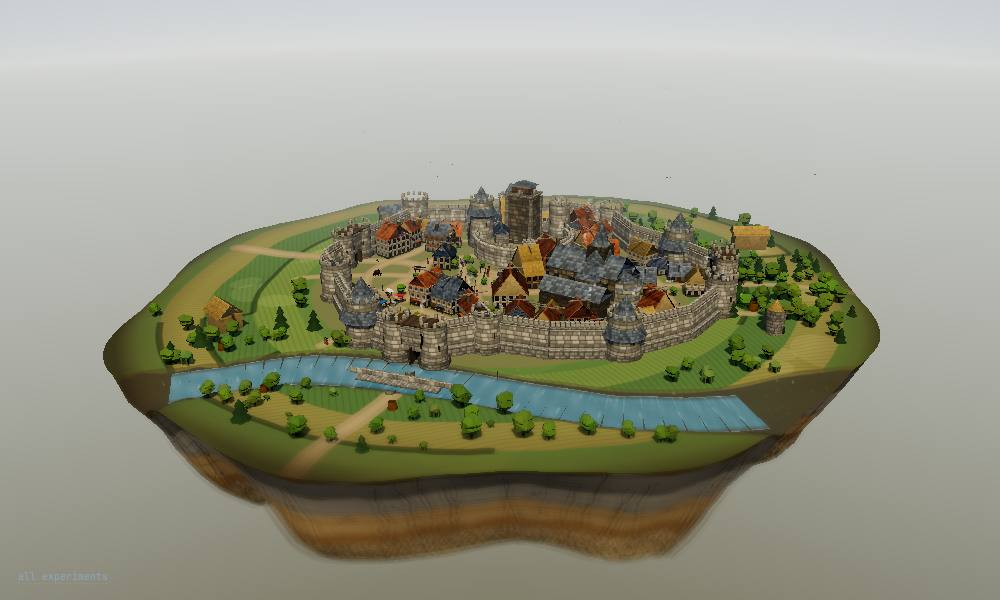
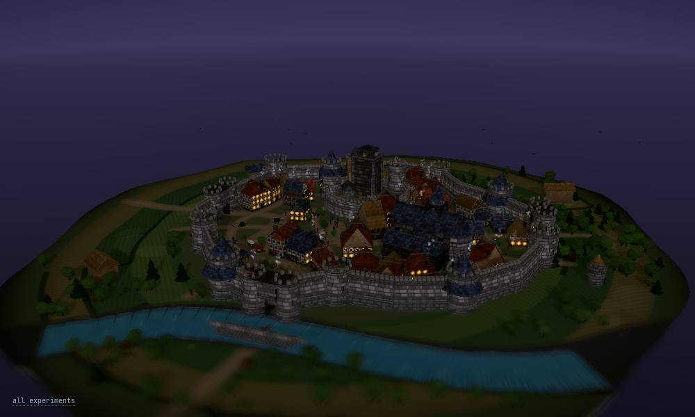
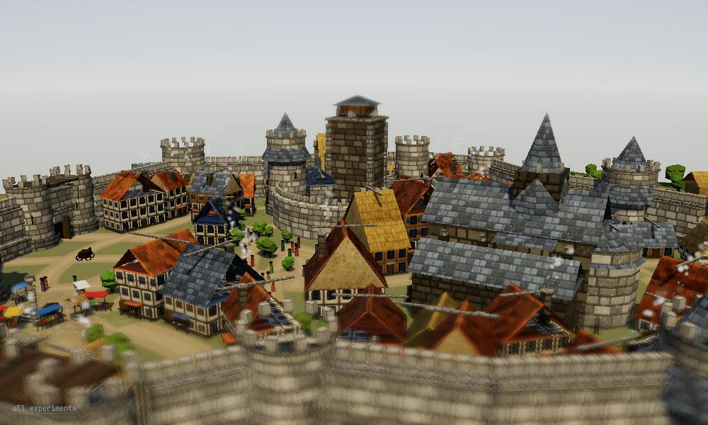
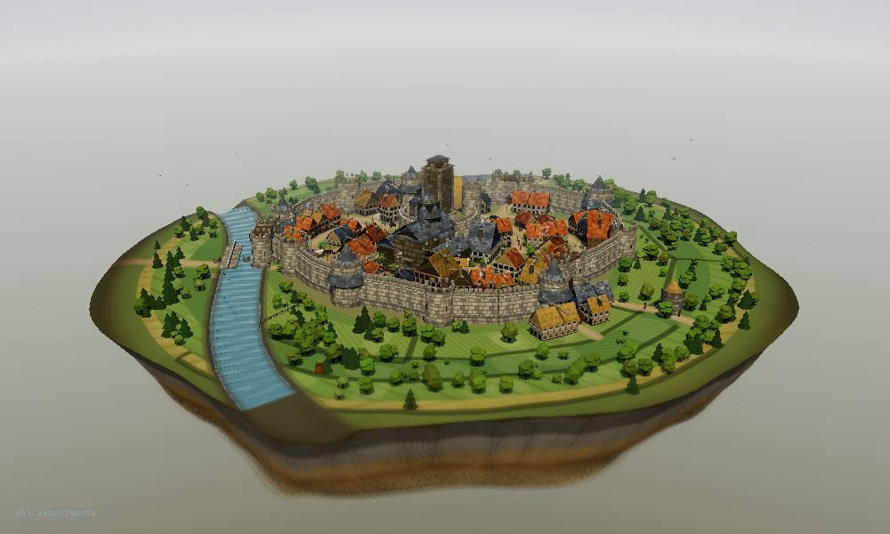
6 · Medieval city diorama
A town grown from a seed: ring streets and lanes carved into blocks, houses lined frontage by frontage with jetties, gables, chimneys and window plans, a keep, a cathedral, a wall punched by gatehouses, a river with bridges, and fields with furrows beyond it. The chunk of earth is cut away to show strata; a tilt-shift pass does the miniature. Every texture is painted on a canvas at load, so the whole town is code.